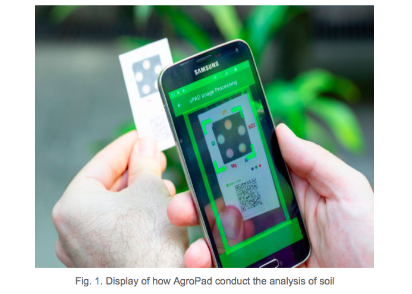
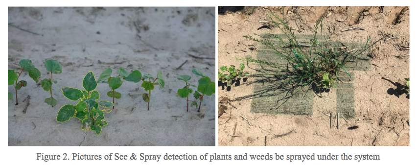
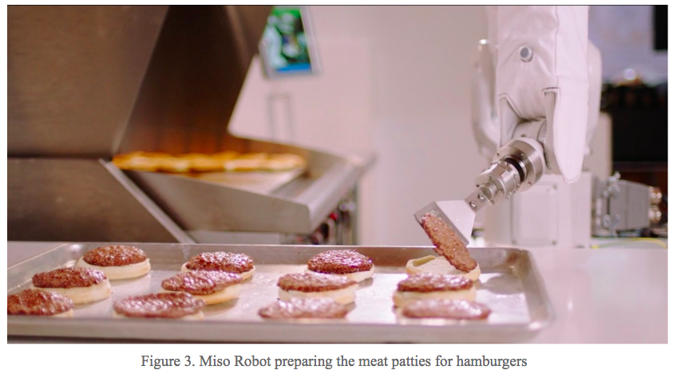
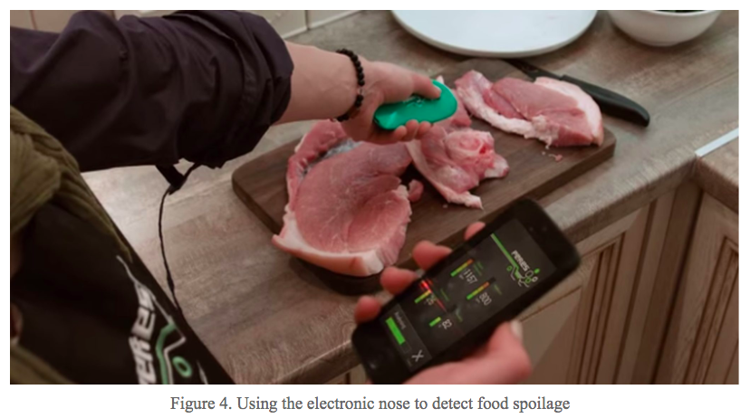
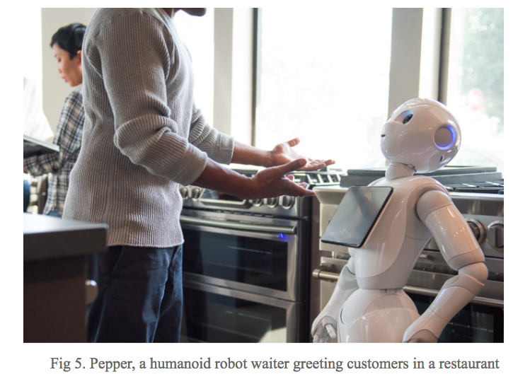

Looking through agricultural activities, food processing, food marketing, and dining tables, we can easily find that many future-impacting challenges and decisions are faced by farmers, food companies and consumers. For instance, farmers need to predict the climate change and soil change in order to achieve the best yields and profits; food manufacturers need to predict consumer preferences in order to produce foods that are liked by consumers; consumers want to know how many calories that one meal contains. However, many of the prediction and decision challenges in the food industry require complex data analysis that is too time-consuming or too difficult for humans to do accurately1. Therefore, a highly efficient and accurate decision making model is needed in the food industry.
Artificial intelligence (AI) works by crunching a large amount of data to figure out patterns. Once clear patterns are defined, the model is strengthened as it is fed more data. The result is a system that gathers, analyzes, and interprets an amount of data that a human being would be unable to manage over an entire life. The more data it has and the more patterns it finds, the more accurate the interpretation will be2. One of the main impacts of AI has been providing more accurate predictions way faster than humans and across various industries: thus reducing time and resources consumed for making accurate decisions.
In healthcare, AI has been assisting doctors in decision making. Studies have developed AI systems to help doctors identify diseases. Cancer spreading (metastasis) is one of the important factors to consider when identifying the cancer stage. Studies have shown that about 1 in 4 metastatic lymph node staging classifications would be changed upon second pathologic review. However, Google has developed one AI approach that is able to correctly identify metastatic cancer with a 99% accuracy3. In advertising, AI has been used to predict or generalize the behavior of customers from their digital footprints in order to target them with personalized promotions or build customer personas automatically4. Netflix uses AI to predict and generate movies or shows that you like based on your view history. Facebook also uses AI to send you advertisements based on what advertisements you have clicked on previously. The success that AI has brought to many industries has truly shown the potential success that AI could bring to the food industry. We will talk about how AI has revolutionized the food industry from agriculture, food manufacturing, food safety, food service to our dining table.
In the past, people realized that agriculture is the base industry of a country so they started to invest large amounts of money into this field. From the mechanical era in 1900’s when we created agriculture machines to increase the yield for crops, the chemical era in 1950’s when we brought in the usage of pesticides or herbicides, the biochemical era in 1990’s when anti-pest and anti-herbicide gene were introduced to plants, now we are in the digital era to improve the existing technology for a better future. In the digital era, machine learning is what people are focusing on. Application of camera, computer and AI has now been widely used in combination to develop advanced agriculture machinery in this field.
The first step for crop plantation is to understand composition and the soil health. However, it is time-consuming for farmers to send their soil sample to the labs and get the analysis data back. To avoid the data from being outdated upon receiving and the high cost of sending soil samples to professional labs for some small farms, IBM researchers developed an AI-powered device called AgroPad to assist farmers to conduct easy chemical analyses on their fields in real-time. AgroPad has a microfluidics chip inside that can perform a chemical analysis of a water or soil sample in less than 10 seconds but it is as small as a business card5. Farmers can simply put his sample on one side of the card, and on the other side, a set of circles provides colorimetric test results that a smartphone can read from. Farmers can receive immediate and accurate results through the app by utilization of machine vision to translate the color composition and intensity into chemical concentrations(Fig. 1).

Besides basic composition, soil health especially microbial diversity of soil should be taken into consideration. Microbial diversity and abundance can help maintain crop growth and promote the biogeochemical cycling of element required by plants where a chemical substance moves through biotic and abiotic compartments of Earth. The Platform for Big Data in Agriculture recognized the importance of microorganism in soil and was creating their own new geocoded soil data by providing geographical coordinates corresponding to the soil profile and microbial diversity. By fusing new geocoded soil data with available earth observation data and leveraging the transformative potential of artificial intelligence, it is easier to identify the profile above ground and at ground level that can appropriately describe microbial diversity and assess the health condition for soil. Meanwhile, the development of this technology can also reduce the costs for farmers to send samples to test microbial diversity by genome sequencing 6,which is usually used to specify the species of microorganism.
After the evaluation of soil condition, crops are ready to be planted. However, crops are not able to absorb enough nutrition if there are other weeds in the same field competing minerals or other nutritious elements with them. Therefore, to control the growth of weeds, a company called Blue River created a machine named See & Spray. The computer has been taught by reading thousands of weed pictures and weed species. Just like what it is called, See & Spray can accurately differentiate weeds and crops by a computer, and determine the appropriate treatment for each weed. Instead of entirely spraying the whole farm, See & Spray only applies herbicides or pesticides to tailor an individual weed. Since the management scale for See & Spray is minimized to 10m X 10m rather than the whole field, we can save up to 90% of herbicides and pesticides compared to those utilized in the entire field 7. Another advantage that See & Spray brings to agriculture industry is that it can mitigate the growth of herbicide resistance in plant by reducing the types and the amount of herbicides and pesticides. Therefore, AI and machine learning in agriculture industry can help farmers eliminate weeds more efficiently and reduce the chemical usage at the same time.

Other than plantation for crops, AI can also be practically applied in produce sorting. Nowadays, more than 50% of fruits and vegetables go to waste because of inefficient and improper handling 9. The quality of the produce plays an essential role in the purchasing decision. Therefore, there are some people teaching machines to understand what is a good piece of fruit versus a bad piece of fruit and deliver the high quality of produce into the market and increase the rate of purchase by consumers. By equipping the machine with a camera and optical sensor, sorting can be done when the camera detects the reflection of infrared from the surface of fruits or vegetables back to the receptor. People can also combine the sorting system together with pneumatic injectors which blow out pressurized air to remove rotten or unripe produce at small sizes and eliminate branches and stones that are mixed with produce during harvesting. However, there’s a big obstacle that machine learning is facing since it’s hard for a robot to tell if produce with irregular size and shape has the same quality. A robot can be programmed to perform one repetitive task but it is easily confused when confronted with irregularity. But now, a product design firm Cambridge Consultants has come up with a robot that can identify different types of fruits and sort them accordingly by turning that picture into a sort of 3D map10, which assist the sorting process to be much better. With the help of 3D map, the quality of fruits or vegetables will not be determined differently by only sizes or shapes. The result of sorting by AI can be more accurate compared to the one done by a human being.
As in the term “from farm to table”, the early beginning steps of food production happening in a farm including soil improvement, plantation and post-harvesting actions are elementarily required. Not only in the agricultural or farming steps, the evolution of AI can also be seen during the food processing and food marketing steps. There have been many attempts to create new technologies and innovations for better impacts on food processing, food safety as well as food service.
Due to the growing number of the world population, it is required to have a better food processing technology which offers less processing time and better accuracy but maintains good quality. Oftentimes, some busy restaurants or fast-food stores regularly offer a few types of foods on their menus and only operate some certain methods of cooking. In order to facilitate their regular work and assist their kitchen employers to operate cooking more quickly and accurately, AI-driven food processing unit could be adopted on the job to increase performance in food preparation. California-based Miso Robotics (Fig 3.), as an example, is an AI-driven robot used in a kitchen environment to help chef prepare and cook hamburger patties. Being built up with sensors and cameras controlled by software allowing to monitor important features such as temperature and the quality of the cooked patties, the robot can perform grilling, frying, prepping and plating. This seems to be a helpful food processing assistant in many hamburger restaurants in the future. However, since humans have learned multiple ways to process foods, it is still a long way to develop such food processing robots to be proficient in all types of cooking procedures.

Along with the food processing, safety is another main issue that should be taken into account in food industry. Currently, conventional microbiological methods for food safety are still widely operated. However, a better way of tracking food safety is still required to minimize the cost and time spent in performing the conventional methods. Being implemented to ensure food safety, AI is getting an increasingly significant role and becoming a substantial part of human’s life. The ultimate goal of ensuring food safety is to control microbial contamination to prevent foodborne illnesses. In order to achieve the goal, sanitary procedures must be strictly performed during food processing. AI can be applied to the field and help stem the food safety issues in many aspects. Recently, a newly-developed device so-called “Electronic Nose” has been introduced for food safety. The electronic nose(Fig 4.) is a chemical sensor designed to mimic the physiological nose. The sensor can interact with volatile molecules in odors and generate some signal which is sent to a computer and analyzed by using a chemical or pathogen database to determine the fingerprint of the data. In this case, the fingerprint recognition is used to trace microbial contamination. Some examples of using electronic nose for the food safety purposes include determination of fruit juice spoilage caused by Alicyclobacillus spp., detection of microbial contamination in processed tomatoes, and screening of fungal contamination of maize grains and green coffee beans. The food industries may obtain more benefits from this technology in the near future as there are a number of researches aiming at making the device more sensitive and more applicable to various types of samples.
After food processing and safety are assured, the next place to consider is “the table” where foods are marketed and delivered to customers. Again, technology never stops growing to make food service industry more innovative while easily accessible in order to help the retailers meet customer expectations. Currently, many restaurants have implemented integrated technology including robotics, intelligent kiosks, internet of things (IoT) and smart applications to improve their services and meet their customer satisfactions. Applications of AI in food marketing and food service can be seen in many aspects. Many restaurants are using virtual applications to deal with customer inquiries and process customer orders. Say2Eat as an example, was founded in 2015. Basically, it is an application that helps chains and retailers improve customer engagement through chatbots. The application developer revealed that by texting or passing voice messages to favorite restaurants, customers can easily order their meals on their phones within less than a minute, thus saving time commuting to the restaurants and time spent on a wait list. Say2Eat functions through mainly popular chatting applications including Facebook Messenger, WhatsApp, SMS, iMessage, etc. Beside the unique taste of foods or stylish decoration, a robot waiter could be another selling point creating impressive food service and great customer satisfaction. Pepper, a humanoid robot waiter, is created by a Japanese technology company SoftBank in collaboration with MasterCard. Pepper can interact with customers, thus helping a restaurant take customer orders, provide some recommendations, introducing sale promotions and processing customer payments via MasterCard account using its smart handheld tablet. Pepper (Fig 5.) have been used in many Japanese coffee shops, and recently, Pizza Hut has also purchased pepper robots for their Asian branches. McDonalds and KFCs have also used similar technology to market their food in big cities. All in all, these technologies expand the platform of food marketing in a more convenient and reliable way. They also help retailers process their business more easily and faster. However, the cost of investment is now still a major drawback. It can also be observed that artificial intelligence implementation in food services and restaurants is making its own step towards the new era and this may alter the way the business is run in the future.

As we can see that our food system is entering new frontiers, there is no doubt in the fact that AI is playing a very important role in it. Artificial intelligence and machine learning offer solutions to our food problems with much more precision and certainty and it can also be used to boost efficiency and reduce environmental impacts on the food system.
But there is always two side to every coin. One of the limitations of AI is the cost associated with it since we know creation of smart technologies can be expensive, due to their complex nature and the need for repair and maintenance. Also, the technology requires use of heavy software which require regular updates with the changing industry and in case of breakdown there is a risk of losing all the data. Restoration of data can further add to the cost and time. In addition to this the collection and maintenance of big data libraries is hard. Also, Today’s AI systems are trained to do a clearly defined task. The system that studies the nutrient profile for soil cannot be used to study the nutrient profile of the food. Another concern that has cropped up with AI is the rise of job losses. AI enhances the value of data much beyond what humans can accomplish by offering automation, intelligence, learning and accuracy all together. So fewer humans are needed to handle it.
While these risks can't be ignored, it is worth keeping in mind that advances in AI can - for the most part - create better business and better lives for everyone. If implemented responsibly, artificial intelligence has immense and beneficial potential. Al adapts with the changing environment just like human beings and gets better the more you use it.
Some of the most prominent food sectors where AI can bring revolution are:
Reducing food waste: Some food industries are looking towards finding ways to reduce their waste and cost. Hence, they are working on converting their machineries into ones which are more flexible with shapes and sizes so that they can do optimal utilization of their raw materials and people “waste not, what they want not”.
Flavor perception: AI can be used to rank flavor preferences among consumers. We can just have a self-service machine which creates food, drinks, ice-creams according to consumer preferences and help in developing a lot of new varieties. Thus, contributing towards Research and Development.
Forecasting Systems: We need new and advanced forecasting systems which are quick and intelligent. This can help farmers in having a better control over their crops with the help of efficient weather forecasts as well as food manufactures in maintaining their inventory since they will have an accurate picture about what products to store and sell and how much by just analyzing the sales pattern in different regions.
Defects Detection: What if someday we just take a picture of out damaged food and we can find out what made it like that? Sounds Interesting? Well this can be one of the new areas where we can use the IMAGE-TO-TEXT feature of the Al systems. It can help us in finding out the defected step in the production line by just having a look at the picture.
Data Analysis: Food industries often deal with a lot of customers and product data every day. Machine learning can help them by unravelling complex data more quickly and efficiently.
A lot of different industries like pharmaceutical, cosmetics etc. are adopting Al into their systems but the current food and beverage industry is not quite so advanced in terms of AI adoption. It is not really a question whether AI will see greater use in the food industry, it is just a question of how much and how quickly.
Collaboration with Harshika Arora, Jingwen Lin, Pongpol Thanuphol
https://foodtank.com/news/2017/11/artificial-intelligence-part2/ https://foodtank.com/news/2017/11/artificial-intelligence-part1/ https://ai.googleblog.com/2018/10/applying-deep-learning-to-metastatic.html?m=1 Psychological targeting as an effective approach to digital mass persuasion. https://thespoon.tech/ibm-agropad-combines-paper-ai-and-cloud-to-analyze-soil-and-water/ https://bigdata.cgiar.org/inspire-challenge-2017-geocoded-soil-data-and-ai-to-provide-an-estimate-and-indicator-for-soil-health/ http://smartmachines.bluerivertechnology.com/ https://www.mindtree.com/sites/default/files/201804/Artificial%20Intelligence%20in%20Agriculture.pdf https://www.youtube.com/watch?v=Bl3XzBWpZbY https://motherboard.vice.com/en_us/article/jp5y3g/here-come-the-fruit-sorting-robots
Leave a comment